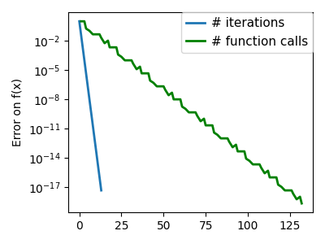
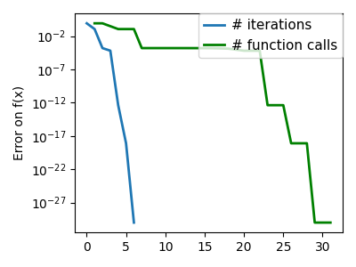
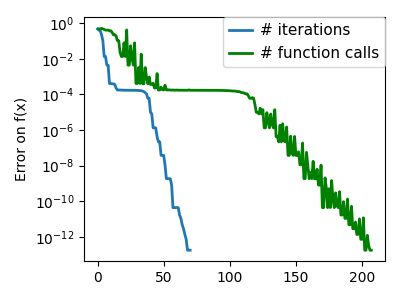

Note
Go to the end to download the full example code
2.7.4.11. Gradient descent¶
An example demoing gradient descent by creating figures that trace the evolution of the optimizer.
import numpy as np
import matplotlib.pyplot as plt
import scipy as sp
import sys, os
sys.path.append(os.path.abspath("helper"))
from cost_functions import (
mk_quad,
mk_gauss,
rosenbrock,
rosenbrock_prime,
rosenbrock_hessian,
LoggingFunction,
CountingFunction,
)
x_min, x_max = -1, 2
y_min, y_max = 2.25 / 3 * x_min - 0.2, 2.25 / 3 * x_max - 0.2
A formatter to print values on contours
A gradient descent algorithm do not use: its a toy, use scipy’s optimize.fmin_cg
def gradient_descent(x0, f, f_prime, hessian=None, adaptative=False):
x_i, y_i = x0
all_x_i = []
all_y_i = []
all_f_i = []
for i in range(1, 100):
all_x_i.append(x_i)
all_y_i.append(y_i)
all_f_i.append(f([x_i, y_i]))
dx_i, dy_i = f_prime(np.asarray([x_i, y_i]))
if adaptative:
# Compute a step size using a line_search to satisfy the Wolf
# conditions
step = sp.optimize.line_search(
f,
f_prime,
np.r_[x_i, y_i],
-np.r_[dx_i, dy_i],
np.r_[dx_i, dy_i],
c2=0.05,
)
step = step[0]
if step is None:
step = 0
else:
step = 1
x_i += -step * dx_i
y_i += -step * dy_i
if np.abs(all_f_i[-1]) < 1e-16:
break
return all_x_i, all_y_i, all_f_i
def gradient_descent_adaptative(x0, f, f_prime, hessian=None):
return gradient_descent(x0, f, f_prime, adaptative=True)
def conjugate_gradient(x0, f, f_prime, hessian=None):
all_x_i = [x0[0]]
all_y_i = [x0[1]]
all_f_i = [f(x0)]
def store(X):
x, y = X
all_x_i.append(x)
all_y_i.append(y)
all_f_i.append(f(X))
sp.optimize.minimize(
f, x0, jac=f_prime, method="CG", callback=store, options={"gtol": 1e-12}
)
return all_x_i, all_y_i, all_f_i
def newton_cg(x0, f, f_prime, hessian):
all_x_i = [x0[0]]
all_y_i = [x0[1]]
all_f_i = [f(x0)]
def store(X):
x, y = X
all_x_i.append(x)
all_y_i.append(y)
all_f_i.append(f(X))
sp.optimize.minimize(
f,
x0,
method="Newton-CG",
jac=f_prime,
hess=hessian,
callback=store,
options={"xtol": 1e-12},
)
return all_x_i, all_y_i, all_f_i
def bfgs(x0, f, f_prime, hessian=None):
all_x_i = [x0[0]]
all_y_i = [x0[1]]
all_f_i = [f(x0)]
def store(X):
x, y = X
all_x_i.append(x)
all_y_i.append(y)
all_f_i.append(f(X))
sp.optimize.minimize(
f, x0, method="BFGS", jac=f_prime, callback=store, options={"gtol": 1e-12}
)
return all_x_i, all_y_i, all_f_i
def powell(x0, f, f_prime, hessian=None):
all_x_i = [x0[0]]
all_y_i = [x0[1]]
all_f_i = [f(x0)]
def store(X):
x, y = X
all_x_i.append(x)
all_y_i.append(y)
all_f_i.append(f(X))
sp.optimize.minimize(
f, x0, method="Powell", callback=store, options={"ftol": 1e-12}
)
return all_x_i, all_y_i, all_f_i
def nelder_mead(x0, f, f_prime, hessian=None):
all_x_i = [x0[0]]
all_y_i = [x0[1]]
all_f_i = [f(x0)]
def store(X):
x, y = X
all_x_i.append(x)
all_y_i.append(y)
all_f_i.append(f(X))
sp.optimize.minimize(
f, x0, method="Nelder-Mead", callback=store, options={"ftol": 1e-12}
)
return all_x_i, all_y_i, all_f_i
Run different optimizers on these problems
levels = {}
for index, ((f, f_prime, hessian), optimizer) in enumerate(
(
(mk_quad(0.7), gradient_descent),
(mk_quad(0.7), gradient_descent_adaptative),
(mk_quad(0.02), gradient_descent),
(mk_quad(0.02), gradient_descent_adaptative),
(mk_gauss(0.02), gradient_descent_adaptative),
(
(rosenbrock, rosenbrock_prime, rosenbrock_hessian),
gradient_descent_adaptative,
),
(mk_gauss(0.02), conjugate_gradient),
((rosenbrock, rosenbrock_prime, rosenbrock_hessian), conjugate_gradient),
(mk_quad(0.02), newton_cg),
(mk_gauss(0.02), newton_cg),
((rosenbrock, rosenbrock_prime, rosenbrock_hessian), newton_cg),
(mk_quad(0.02), bfgs),
(mk_gauss(0.02), bfgs),
((rosenbrock, rosenbrock_prime, rosenbrock_hessian), bfgs),
(mk_quad(0.02), powell),
(mk_gauss(0.02), powell),
((rosenbrock, rosenbrock_prime, rosenbrock_hessian), powell),
(mk_gauss(0.02), nelder_mead),
((rosenbrock, rosenbrock_prime, rosenbrock_hessian), nelder_mead),
)
):
# Compute a gradient-descent
x_i, y_i = 1.6, 1.1
counting_f_prime = CountingFunction(f_prime)
counting_hessian = CountingFunction(hessian)
logging_f = LoggingFunction(f, counter=counting_f_prime.counter)
all_x_i, all_y_i, all_f_i = optimizer(
np.array([x_i, y_i]), logging_f, counting_f_prime, hessian=counting_hessian
)
# Plot the contour plot
if not max(all_y_i) < y_max:
x_min *= 1.2
x_max *= 1.2
y_min *= 1.2
y_max *= 1.2
x, y = np.mgrid[x_min:x_max:100j, y_min:y_max:100j]
x = x.T
y = y.T
plt.figure(index, figsize=(3, 2.5))
plt.clf()
plt.axes([0, 0, 1, 1])
X = np.concatenate((x[np.newaxis, ...], y[np.newaxis, ...]), axis=0)
z = np.apply_along_axis(f, 0, X)
log_z = np.log(z + 0.01)
plt.imshow(
log_z,
extent=[x_min, x_max, y_min, y_max],
cmap=plt.cm.gray_r,
origin="lower",
vmax=log_z.min() + 1.5 * log_z.ptp(),
)
contours = plt.contour(
log_z,
levels=levels.get(f, None),
extent=[x_min, x_max, y_min, y_max],
cmap=plt.cm.gnuplot,
origin="lower",
)
levels[f] = contours.levels
plt.clabel(contours, inline=1, fmt=super_fmt, fontsize=14)
plt.plot(all_x_i, all_y_i, "b-", linewidth=2)
plt.plot(all_x_i, all_y_i, "k+")
plt.plot(logging_f.all_x_i, logging_f.all_y_i, "k.", markersize=2)
plt.plot([0], [0], "rx", markersize=12)
plt.xticks(())
plt.yticks(())
plt.xlim(x_min, x_max)
plt.ylim(y_min, y_max)
plt.draw()
plt.figure(index + 100, figsize=(4, 3))
plt.clf()
plt.semilogy(np.maximum(np.abs(all_f_i), 1e-30), linewidth=2, label="# iterations")
plt.ylabel("Error on f(x)")
plt.semilogy(
logging_f.counts,
np.maximum(np.abs(logging_f.all_f_i), 1e-30),
linewidth=2,
color="g",
label="# function calls",
)
plt.legend(
loc="upper right",
frameon=True,
prop={"size": 11},
borderaxespad=0,
handlelength=1.5,
handletextpad=0.5,
)
plt.tight_layout()
plt.draw()
- 
- 

- 

/opt/hostedtoolcache/Python/3.11.8/x64/lib/python3.11/site-packages/scipy/optimize/_linesearch.py:313: LineSearchWarning: The line search algorithm did not converge
alpha_star, phi_star, old_fval, derphi_star = scalar_search_wolfe2(
/home/runner/work/scientific-python-lectures/scientific-python-lectures/advanced/mathematical_optimization/examples/plot_gradient_descent.py:68: LineSearchWarning: The line search algorithm did not converge
step = sp.optimize.line_search(
/home/runner/work/scientific-python-lectures/scientific-python-lectures/advanced/mathematical_optimization/examples/plot_gradient_descent.py:232: RuntimeWarning: More than 20 figures have been opened. Figures created through the pyplot interface (`matplotlib.pyplot.figure`) are retained until explicitly closed and may consume too much memory. (To control this warning, see the rcParam `figure.max_open_warning`). Consider using `matplotlib.pyplot.close()`.
plt.figure(index, figsize=(3, 2.5))
/home/runner/work/scientific-python-lectures/scientific-python-lectures/advanced/mathematical_optimization/examples/plot_gradient_descent.py:177: OptimizeWarning: Unknown solver options: ftol
sp.optimize.minimize(
Total running time of the script: (0 minutes 6.411 seconds)